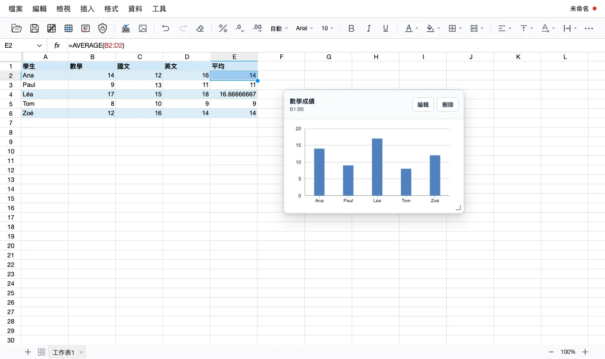
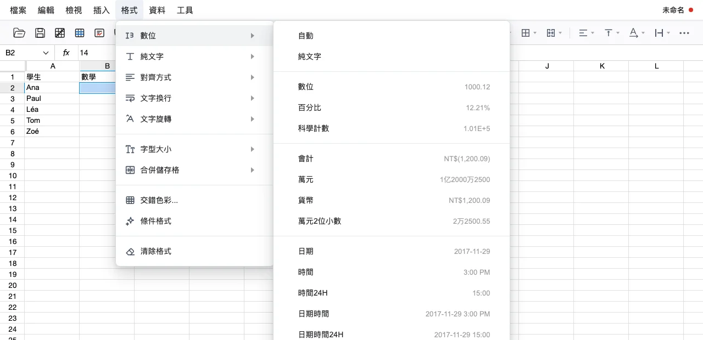

介面

從上到下：功能表列、按鈕列、資料編輯列、工作表、工作表標籤和縮放。
功能表
| 功能表 | 內容 |
|---|---|
| 檔案 | 開啟、儲存，列印 |
| 編輯 | 復原、取消復原，向下、向右填滿 |
| 檢視 | 格線，凍結 |
| 插入 | 圖片，圖表，核取方塊、下拉式清單 |
| 格式 | 數字，文字、對齊、合併，交替色彩，條件式格式 |
| 資料 | 排序和篩選 |
| 工具 | 保護，本手冊（使用手冊），DocTools，原始碼，版本（關於...） |
勾號表示已啟用的選項：顯示格線、凍結儲存格、粗體、篩選、受保護的活頁簿。

按鈕列
| 按鈕 | 作用 |
|---|---|
| 開啟、儲存 | |
| 顯示或隱藏格線 | |
| 交替色彩 | |
| 條件式格式 | |
| 保護；活頁簿受保護時呈藍色 | |
| 插入圖表 | |
| 插入圖片 | |
| 復原、取消復原 | |
| 清除格式 | |
| 百分比、減少或增加小數位 | |
| 自動、Arial、10 | 數值格式、字型、字號 |
| 粗體、斜體、下劃線 | |
| 文字色彩、填滿色彩 | |
| 邊框、合併 | |
| 對齊、旋轉、換行 | |
| 凍結 | |
| 自動求和及其他公式 | |
| 排序和篩選 |
按鈕的小箭頭開啟其選項；按鈕本身重複上一次的選擇。視窗較窄時，最後幾個按鈕收在 後面。
資料編輯列
- 左側是名稱方塊：選區的位址，或範圍的名稱。其箭頭列出已命名範圍，並可開啟名稱管理器。
- fx 右側是儲存格的內容，包括公式，可在此修改。
工作表
標籤與縮放
底部的 新增工作表， 列出所有工作表（工作表）。右側的 − 和 + 調整縮放；按一下百分比可選擇 10% 到 400%。
復原
或 Ctrl Z 復原，、Ctrl Y 或 Ctrl Shift Z 取消復原：輸入、貼上、格式設定、插入。開啟活頁簿、顯示或隱藏格線、保護活頁簿、新增名稱或條件式格式規則時，歷史記錄重新開始。圖表不在其中：用圖表自己的按鈕修改或刪除。